¿Qué es Next.js?
Next.js es un framework de React que habilita la funcionalidad de renderizado del lado del servidor y la generación de sitios estáticos para crear aplicaciones web rápidas y optimizadas.
- 📦 Ofrece optimización automática para las aplicaciones
- 🔍 Soporte SEO integrado gracias al renderizado del lado del servidor
- ⚙️ Configuración mínima necesaria para empezar
- 🌐 Creación de rutas simplificada a través de archivos en el directorio `pages`
Características de Next.js
- 🚀 Renderizado del lado del servidor (SSR)
- 🌐 Generación de sitios estáticos (SSG)
- 🔄 Hot Module Replacement (HMR)
- 📦 Integración fácil con APIs y servicios externos
- ⚙️ Soporte para TypeScript y CSS Modules
- 🛠️ Rutas API incorporadas para desarrollar API backend
- 📈 Optimización de rendimiento automática
Ventajas de Usar Next.js
- 💡 Mejor experiencia de desarrollo con HMR y recarga rápida
- 📈 Mejor rendimiento con generación de sitios estáticos y SSR
- 🌐 Optimización SEO gracias al renderizado del lado del servidor
- 📦 Fácil integración con servicios y APIs externas
- 🛠️ Soporte nativo para TypeScript y CSS Modules
Ejemplo de Código
A continuación se muestra un ejemplo de código utilizando Next.js:
Ejercicio 11.1, 11.2, 11.3 y 11.4
Ejercicio 11.1 Desarrollar un CRUD en Next JS con componentes de servidor y ciente con la API https://jsonplaceholder.typicode.com/posts. Agregar las funcionalidades de: > Ordenación por cada campo de datos > Busqueda en el campo title > Paginación de 8 en 8. > Un layout y componentes tipo panel de administración con header, aside, main y footer. > Sistema de Autenticación utilizando users de la API https://jsonplaceholder.typicode.com/users. Para el nombre de usuario utilice el campo username igual para la contraseña.

Components/Aside
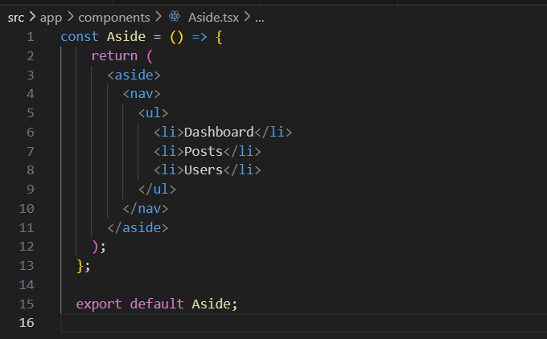Components/Footer
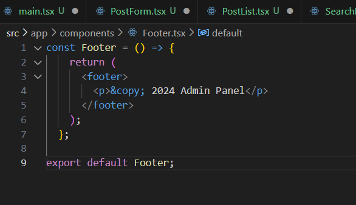Components/Header
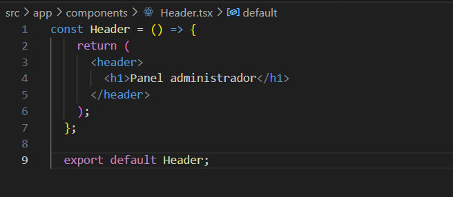Components/Main
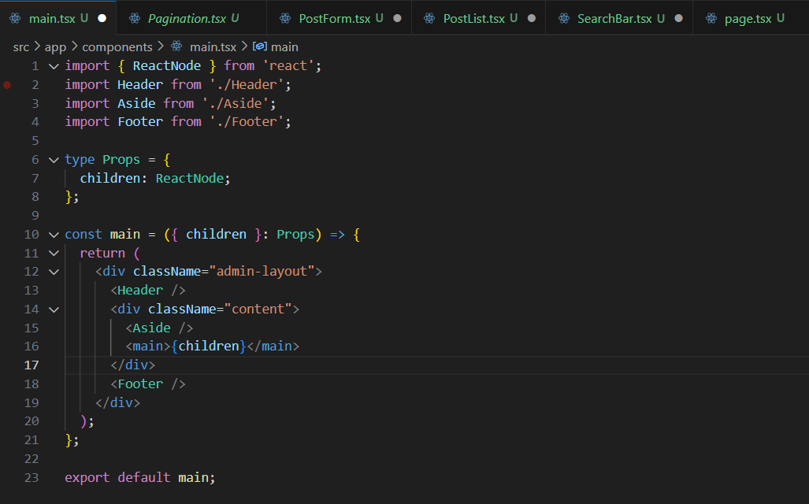Components/Pagination
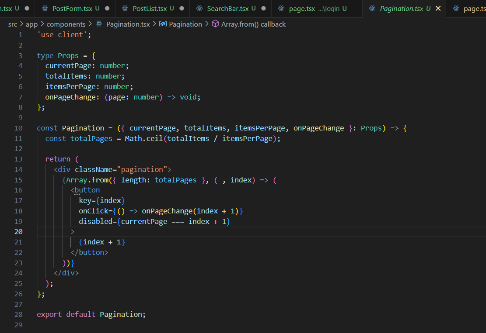Components/PostForm
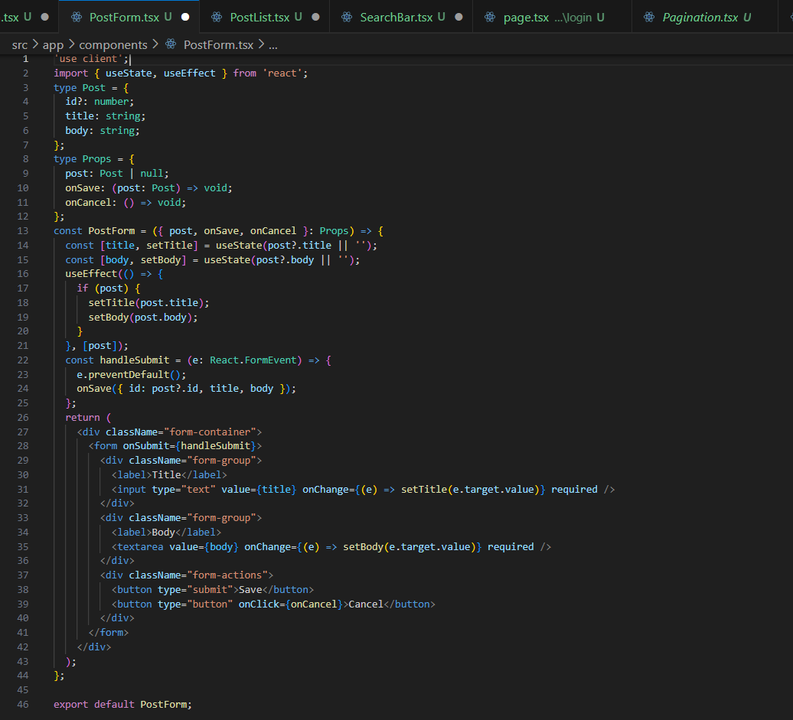Components/PostList
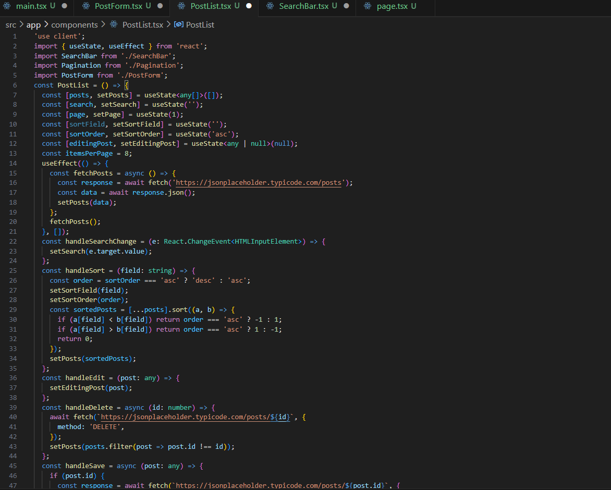Components/SearchBar
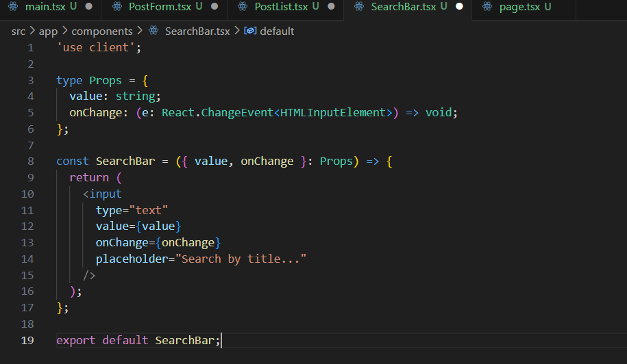lOGIN
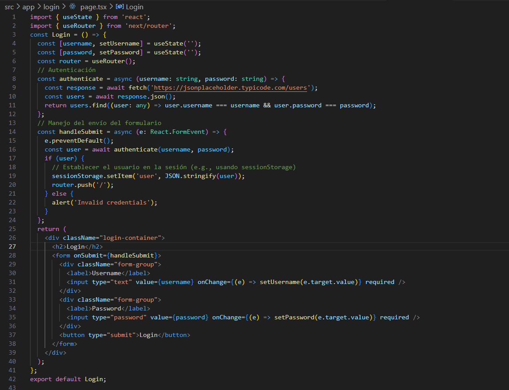Page.tsx
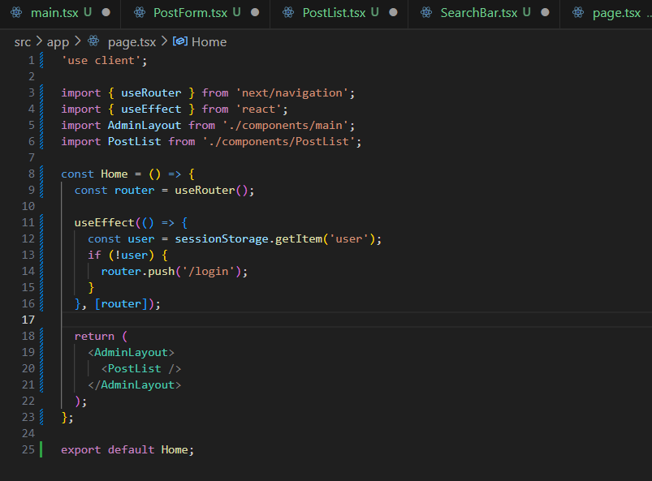Ejecución del Ejemplo
La siguiente imagen muestra la ejecución del ejercicio:
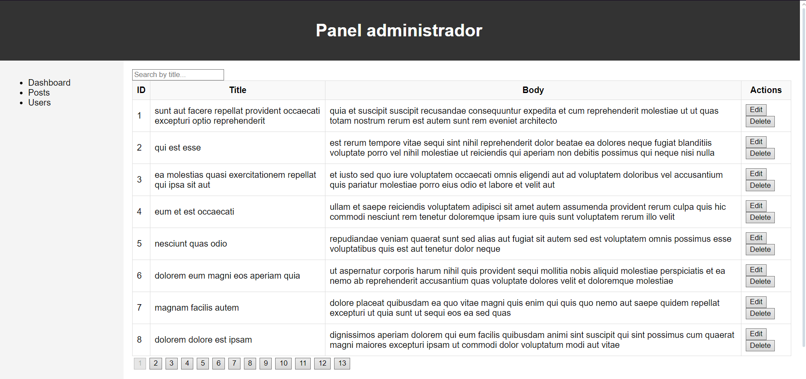